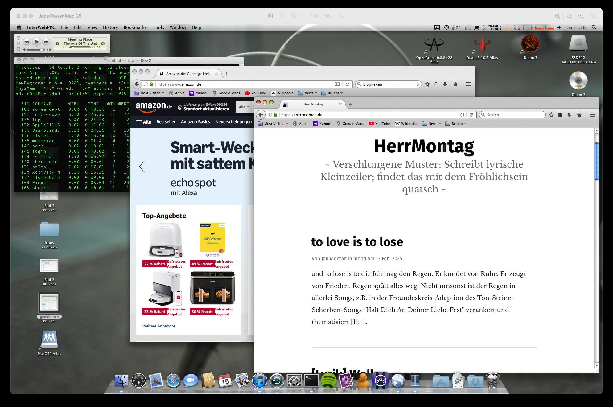

Mac OS X 10.5.8 with modern Browser
As you can see in the screenshot, I am visiting both my weblog and amazon.de Websites with the Powermac G5 2,0 GHz. This is only possible because there is a relative modern webbrowser (2022) by user wicknix, built upon TenFourFox.
 InterWebPPC: Mozilla for Power Macintosh
{kind=link}
So with this webbrowser the old 20 years old Powermac is able to visit modern websites like Amazon. No, I dont like amazon, but is is an example. Youtube also works, but loads a lot longer.
With this browser it is possible to use the mac in a day to day modern web world, but slow. I can even access webmails, read yahoo news or something like that while chatting via colloguy and telnetting into my server.
Really sad to read this:
This repository has been archived by the owner on Jul 26, 2023. It is now read-only.
Another good one is gone, but wicknix do have his reasons I bet.
Ressources
- https://github.com/wicknix/InterWebPPC
Tags: macosx, powermacg5, firefox, leopard
Firefox 128-ESR on PPC64 Powermac G5
Since I own the Powermac G5 and play around with it, I want to install a modern Browser and therefor, I want to run Firefox on it. But it is not possible. I tried different Linux Distros like Debian 12 PPC64, T2/Linux by Rene Rebe and even some special builts of ARCH for PPC64 - but I had no luck. No one had luck and even the Debian Mailinglist said it is not possible to built Firefox for PPC64 at this time. I even wrote about that.
And now, the other day, I tried Adelie Linux PPC64 and et voila: I fucking could start Firefox and tested some Websites like youtube.com and it worked. So I made a screenshot because I could not believe myself. I totally hope I can use Firefox sooner than later on the other Distros too.
 Firefox 128 ESR running on top of LXQT Adelie Linux Powerpc 64 Powermac G5
Firefox 128 ESR running on top of LXQT Adelie Linux Powerpc 64 Powermac G5
Sincerely, Jan
Tags: powermacg5, firefox, ppc64, linux
Status of Firefox on PPC64 Big Endian
So yesterday was the release ouf 24.12 T2/Linux and the maintainer, creator and mastermind behind, René Rebe, were at a lifestream on youtube and twitch. So I played around with T2 on my Powermac G5 and listened to the stream and had a small chat with him. The most important part is an actual browser on that machine so I asked for the actual status of firefox.
René replied that the problems with big endian still exist and occours so there is no Firefox for Big Endian Machines at the moment. Firefox builts well on all little endian processors, but not on the big ones. There is no better answer at this time, but I hope he can do something when he have the time. Because to make that clear: there is not a big audience who is working on big endian ppc64 processors like my 970MP is in the world and I believe he get's not enough feedback and attention for his work for the open source community. But this is another part.
Debian also faces the problem of not building firefox for ppc/64, but they have other important things to do than to fix that.
I know there were patches from oracle for big endian firefox but I cant find the repository anymore. Maybe these patches and the Void Patches could do some important thing? [UPDATE] I found the patches for firefox.
I bet biggest problem are the people at firefox who doesnt care about big endian firefox builts for ppc64 because it is not important.
Ressources
- New Release Of T2/Linux
- Oracle Patches for Firefox
- PPC 750 Void Linux Firefox Patches
- void-packages-ppc750/srcpkgs/firefox/patches/big-endian-image-decoders.patch
- Debian Build Status Firefox
Tags: t2linux, powermacg5, linux, firefox